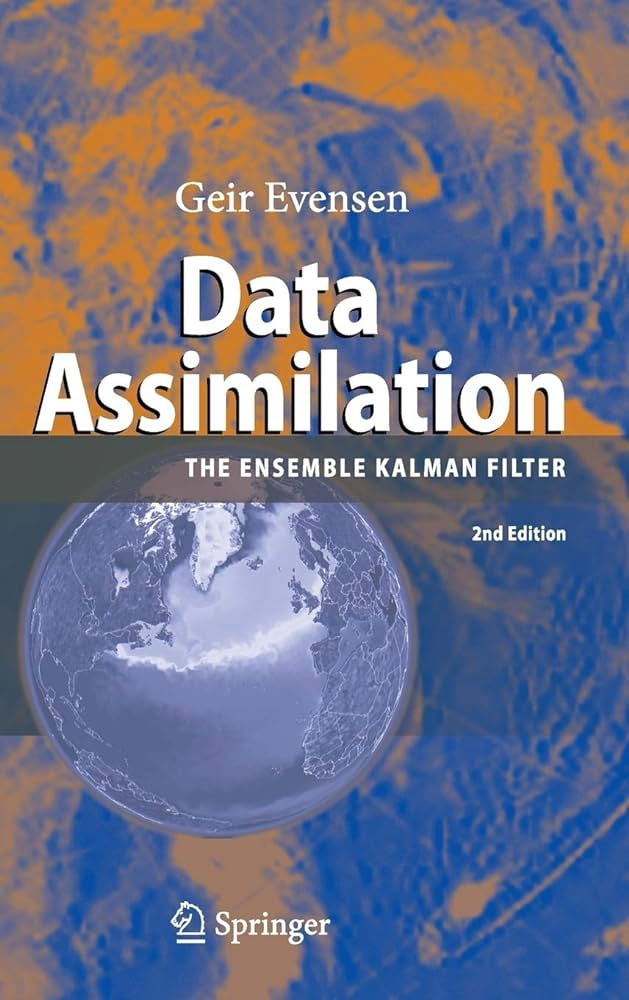

Ensemble Kalman Updates
Assume a prior Gaussian prior distribution \(\pi_0 \equiv \mathcal{N}(m_x,P_x)\) and a noisy observation \(y_\star \in \mathbb{R}^{D_y}\) with
\[ y_\star = H x + \xi \qquad \text{with} \qquad \xi \sim \mathcal{N}(0,R) \]
where \(x \in \mathbb{R}^{D_x}\) is an unknown quantity of interest. The posterior distribution \(\pi \equiv \mathcal{N}(m^{a}_x,P^{a}_x)\) is Gaussian and is given by
\[ \begin{align} \left\{ \begin{aligned} m_x^{a} &= m_x + P_x H^\top {\left( H P_x H^\top + R \right)} ^{-1}(y_\star - H m_x)\\ P_x^{a} &= P_x - P_x H^\top {\left( H P_x H^\top + R \right)} ^{-1} \, H P_x, \end{aligned} \right. \end{align} \]
as standard Gaussian conditioning shows it. This can also be written as
\[ \begin{align} \left\{ \begin{aligned} m_x^{a} &= m_x + K \, (y_\star - H m_x)\\ P_x^{a} &= (I - K \, H) P_x, \end{aligned} \right. \end{align} \]
for Kalman Gain Matrix \(K \in \mathbb{R}^{D_x,D_y}\) defined as
\[ K \; = \; P_x H^\top {\left( H P_x H^\top + R \right)} ^{-1}. \tag{1}\]
which can also be expressed as
\[ K \; = \; P_{xy} \, P_y^{-1}. \]
for \(X \sim \pi_0\) and \(Y = HX + \mathcal{N}(0,R)\); this point of view can be a useful for establishing generalization to non-linear scenarios. The important remark is that the posterior covariance matrix \(P_x^{a} \in \mathbb{R}^{D_x,D_x}\) and the posterior mean \(m^{a}_x \in \mathbb{R}^{D_x}\) can also be expressed as
\[ \begin{align} \left\{ \begin{aligned} m_x^{a} &= \textcolor{red}{(I - K \, H)} \, m_x + \textcolor{blue}{K} \, y_\star\\ P_x^{a} &= \; \textcolor{red}{(I - K \, H)} \, P_x \, \textcolor{red}{(I - K \, H)^\top} + \textcolor{blue}{K} R \textcolor{blue}{K^\top}. \end{aligned} \right. \end{align} \tag{2}\]
This shows that \(P\) is indeed positive semi-definite. More importantly, this gives a mechanism for transforming samples from the prior distributions into samples from the posterior distributions. This step is often referred to as the assimilation step in the data-assimilation literature. Indeed, consider \(N\) iid samples from the prior distribution, \(x_1, \ldots, x_N \sim \pi_0(dx)\). Define the “assimilated” samples as:
\[ x^{a}_i = \textcolor{red}{(I - K \, H)} \, x_i + \textcolor{blue}{K}(y_\star - \xi_i) \]
for iid noise terms \(\xi_i \sim \mathcal{N}(0,R)\). From Equation 2 it is clear that \(x^{a}_1, \ldots, x^{a}_N\) are iid samples from the Gaussian posterior distribution \(\pi = \mathcal{N}(m_x^{a},P_x^{a})\). It is more intuitive to write this as
\[ x^{a}_i = x_i + K \, (y_\star - \textcolor{green}{ y_{i} } ) \]
where \( \textcolor{green}{ y_{i} } \in \mathbb{R}^{D_y}\) are fake observations obtained as:
\[ \textcolor{green}{ y_{i} \, = \, H x_i + \xi_i.} \]
Empirical version: non-linearity and non-Gaussianity
Suppose that we would like to estimate \(x \in \mathbb{R}^{D_x}\) from the noisy observation
\[ y_\star = \mathcal{H}(x) + \xi \qquad \text{with} \qquad \xi \sim \mathcal{N}(0,R) \]
and possibly-nonlinear observation operator \(\mathcal{H}: \mathbb{R}^{D_x} \to \mathbb{R}^{D_y}\). Assume that we also have \(N\) samples \(x_1, \ldots, x_N\) generated from some (unkown) prior distribution. For example, these samples could come from another numerical procedure. In order to obtain \(N\) approximate samples from the posterior distribution, one can set
\[ x^{a}_i = x_i + \widehat{K} \, [ y_{\star} - \textcolor{green}{y_i} ] \]
for fake observations \( \textcolor{green}{y_{i} = \mathcal{H}(x_i) + \xi_i}\). The approximate Kalman gain matrix \(\widehat{K}\) is obtained by noting that the Kalman gain matrix,
\[ K \; = \; P_x H^\top {\left( H P_x H^\top + R \right)} ^{-1}, \]
is expressed in terms of \(P_x H^\top = \mathop{\mathrm{Cov}}(X,HX)\) and \(H P_x H^\top = \mathop{\mathrm{Var}}(HX)\) for \(X \sim \pi_0\). This means that an approximate Kalman matrix can be obtained using empirical estimates of these covariance matrices:
\[ \widehat{K} \; = \; \widehat{\mathop{\mathrm{Cov}}}([x_i]_i, [\mathcal{H}(x_i)]_i) \, {\left( \widehat{\mathop{\mathrm{Var}}}([\mathcal{H}(x_i)]_i) + R \right)} ^{-1}. \]
or slightly more generally if the noise is not additive and Gaussian,
\[ \widehat{K} \; = \; \widehat{P}_{xy} \, \widehat{P}_y^{-1}. \]
These updates form the basis of the Ensemble Kalman filter (EnKF), and very successful and scalable approach to data-assimilation of high-dimensional dynamical systems. This method is operationally employed across various weather forecasting centers across the globe.

Matheron’s Rule
Consider a jointly Gaussian random vector \((X,Y) \in \mathbb{R}^{D_x + D_y}\). To sample from the conditional distribution \(X|Y=y_\star\), one can sample first sample \((X,Y)\) from the unconditional distribution and then set:
\[ % X^{a} \; = \; X + \cov(X,Y) \, \var(Y)^{-1} (y_\star - Y). X^{a} \; = \; X + P_{xy} \, P_{yy}^{-1} (y_\star - Y). \]
The sample \(X^{a}\) is a sample from the conditional distribution \(X|Y=y_\star\) and the proof is straightforward: it suffices to compute the first two moments of the Gaussian vector \(X^{a}\) and check that they are equal to what they should be. This method is often called the Matheron’s rule and (Wilson et al. 2020) mentions that this “notion of conditioning by kriging was first presented by Matheron in the early 1970s”. Naturally, this provides another avenue to derive the EnKF update equations, as has been described by a number of authors (Doucet 2010). Given samples \(x_i\) from the Gaussian prior, generate samples \(y_i = \mathcal{H}(x_i) + \xi_i\) for \(\xi_i \sim \mathcal{N}(0,R)\): this gives pairs samples \((x_i,y_i)\) from the joint “prior”. One can obtain samples from the posterior by setting \(x^{a}_i = x_i + P_{xx} \, P_{yy}^{-1} (y_\star - y_i)\). Naturally, the matrix \(P_{xy}\) can be estimated as \(\widehat{\mathop{\mathrm{Cov}}}([x_i]_i, [\mathcal{H}(x_i)]_i)\) and \(P_{y}\) is estimated as \(\widehat{\mathop{\mathrm{Var}}}([\mathcal{H}(x_i)]_i) + R\). This is exactly the EnKF update!
Derivative-Free optimization
Interestingly enough, the remarks above can be used to design in a relatively principled manner a derivative free optimizer (Huang et al. 2022). For example, assume one would like to minimize a functional of the type
\[ \Psi(x) \; = \; \|y_\star - \mathcal{H}(x)\|^2_{R^{-1}}. \]
One can start with a cloud of particles \(x_1, \ldots, x_N\) and keep updating them by assuming that one assimilates the noisy observation \(y_\star\) generated from a postulated observation process
\[ y_\star = \mathcal{H}(x) + \varepsilon^{-1} \, \xi \]
for \(\xi \sim \mathcal{N}(0,R)\) and \(\varepsilon\ll 1\) a “step-size”. Each assimilation step steers the cloud of points towards the rights direction. Careful choice of the step-size \(\varepsilon\) is often crucial, as in any optimization procedure. It is indeed related to Information-Geometric Optimization Algorithms (IGO): the article (Ollivier et al. 2017) is beautiful!